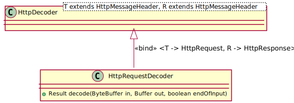

Class HttpRequestDecoder
java.lang.Object
org.jdrupes.httpcodec.protocols.http.HttpCodec<T>
org.jdrupes.httpcodec.protocols.http.HttpDecoder<HttpRequest,HttpResponse>
org.jdrupes.httpcodec.protocols.http.server.HttpRequestDecoder
- All Implemented Interfaces:
Codec,Decoder<HttpRequest,HttpResponse>
public class HttpRequestDecoder extends HttpDecoder<HttpRequest,HttpResponse>
A decoder for HTTP requests.
It accepts data from a sequence of
ByteBuffers and decodes them into HttpRequests
and their (optional) payload.

-
Nested Class Summary
Nested Classes Modifier and Type Class Description static classHttpRequestDecoder.ResultResults fromHttpRequestDecoderadd no additional information toHttpDecoder.Result.Nested classes/interfaces inherited from class org.jdrupes.httpcodec.protocols.http.HttpDecoder
HttpDecoder.BodyModeNested classes/interfaces inherited from interface org.jdrupes.httpcodec.Codec
Codec.ProtocolSwitchResult -
Field Summary
Fields inherited from class org.jdrupes.httpcodec.protocols.http.HttpDecoder
HTTP_VERSION, peerEncoder, protocolVersion, SPFields inherited from class org.jdrupes.httpcodec.protocols.http.HttpCodec
messageHeader -
Constructor Summary
Constructors Constructor Description HttpRequestDecoder() -
Method Summary
Modifier and Type Method Description HttpRequestDecoder.Resultdecode(ByteBuffer in, Buffer out, boolean endOfInput)Decodes the next chunk of data.Class<HttpRequest>decoding()Returns the type of the messages decoded by this decoder.protected HttpDecoder.BodyModeheaderReceived(HttpRequest message)Informs the derived class that the header has been received completely.protected HttpRequestnewMessage(String startLine)Checks whether the first line of a message is a valid request.protected HttpRequestDecoder.Result.FactoryresultFactory()Returns the result factory for this codec.Methods inherited from class org.jdrupes.httpcodec.protocols.http.HttpDecoder
header, isAwaitingMessage, isClosed, maxHeaderLength, messageComplete, setMaxHeaderLength, setPeerEncoderMethods inherited from class org.jdrupes.httpcodec.protocols.http.HttpCodec
bodyCharset
-
Constructor Details
-
HttpRequestDecoder
public HttpRequestDecoder()
-
-
Method Details
-
resultFactory
Description copied from class:HttpDecoderReturns the result factory for this codec.- Specified by:
resultFactoryin classHttpDecoder<HttpRequest,HttpResponse>- Returns:
- the factory
-
decoding
Description copied from interface:DecoderReturns the type of the messages decoded by this decoder.- Returns:
- the value
-
decode
Description copied from class:HttpDecoderDecodes the next chunk of data.- Specified by:
decodein interfaceDecoder<HttpRequest,HttpResponse>- Overrides:
decodein classHttpDecoder<HttpRequest,HttpResponse>- Parameters:
in- holds the data to be decodedout- gets the body data (if any) written to itendOfInput- true if there is no input left beyond the data currently in the in buffer (indicates end of body or no body at all)- Returns:
- the result
-
newMessage
Checks whether the first line of a message is a valid request.If so, create a new request message object with basic information, else throw an exception.
Called by the base class when a first line is received.
- Specified by:
newMessagein classHttpDecoder<HttpRequest,HttpResponse>- Parameters:
startLine- the first line- Returns:
- the new HttpMessage object that is to hold the decoded data
- Throws:
HttpProtocolException- if the line is not a correct request line
-
headerReceived
Description copied from class:HttpDecoderInforms the derived class that the header has been received completely.- Specified by:
headerReceivedin classHttpDecoder<HttpRequest,HttpResponse>- Parameters:
message- the message- Returns:
- indication how the body will be transferred
- Throws:
HttpProtocolException- if the input violates the HTTP
-